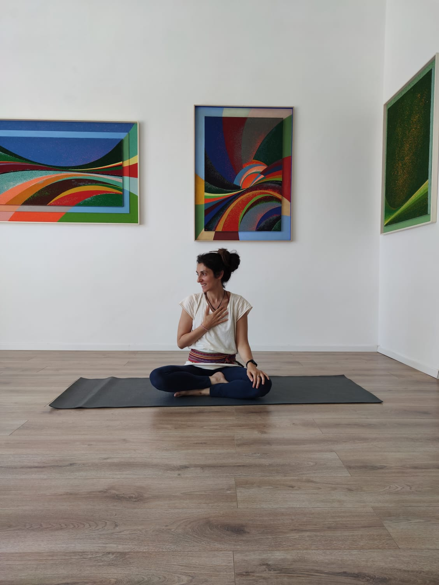

Alexia Granato • British Wheel of Yoga
La Mia Storia & Vocazione
Mi presento: sono Alexia
Mi sono avvicinata allo yoga per un'esigenza comune a molti: scaricare lo stress, alleviare un mal di schiena cronico e ritrovare il sonno.
Giorno dopo giorno, ho scoperto che questa disciplina era molto più di un rimedio fisico. La pratica, oltre a farmi ritrovare il benessere del corpo, mi ha donato una profonda consapevolezza corporea, delle mie emozioni e delle mie azioni.
Lo yoga è diventato così un compagno fedele nella mia vita di tutti i giorni, sostenendomi specialmente nei momenti di più grande evoluzione e cambiamento. Mi ha accompagnata e custodita durante la mia gravidanza e nel mio percorso da neomamma.
Ho vissuto sulla mia pelle il valore immenso del movimento consapevole e del respiro in queste fasi così delicate. Per questo motivo, ho scelto di dedicare il mio lavoro ad aiutare le donne a ritrovare il proprio ritmo naturale e a custodire il proprio equilibrio, specialmente nei momenti di grande trasformazione.
In particolare, ho scelto di specializzarmi nel supporto alla maternità e all'infanzia. Il mio obiettivo è guidare anche te in questo viaggio, offrendoti uno spazio sicuro dove ritrovare stabilità, fiducia e una connessione profonda con te stessa e con il tuo bambino.
Competenza & Deontologia
Il Mio Percorso di Formazione
Anni di studio continuo e standard qualitativi internazionali per offrirti una guida sicura e accogliente.
Formazione avanzata e completa sulla metodologia, le posizioni (asana), le tecniche di respiro (pranayama), l'anatomia del corpo fisico e sottile e la filosofia dello yoga. Il Diploma rilasciato dalla British Wheel of Yoga (BWY) rappresenta il più alto standard di formazione per insegnanti disponibile nel Regno Unito.
Integrazione sinergica tra la fluidità e la centratura dello yoga e il rinforzo profondo della muscolatura posturale e pelvica tipico del metodo Pilates.
Percorsi dedicati al benessere totale, alla connessione profonda con il bebè e alla preparazione attiva al parto della futura mamma, includendo pratiche di intimità e condivisione per la coppia durante l'attesa e incontri in collaborazione con l'ostetrica.
Sostegno specialistico alla neomamma nel recupero psicofisico e nella cura della relazione affettiva e corporea con il proprio piccolo (dai 40 giorni ai 10 mesi).
Formazione specifica per l'accompagnamento e il supporto delle tappe fondamentali dello sviluppo motorio, sensoriale e cognitivo del neonato (tummy time, rotolo, gattonamento, stimolazione multisensoriale).
Specializzazione nello yoga per bambini e ragazzi (1-3 anni e 3-14 anni) per aiutarli a scoprire il loro mondo interiore, riconoscere le emozioni e sviluppare le capacità corporee attraverso il gioco, l'immaginazione e il movimento.